Jesus says, “Greg. To get MORE Jesus inside of you, we need to RE-calibrate your mind. So, you need to stretch first. Go here, to our Jesus/Greg pre-flight checklist.”
Jesus says, “Look, Greg. See what me and Axl did in 1992?”
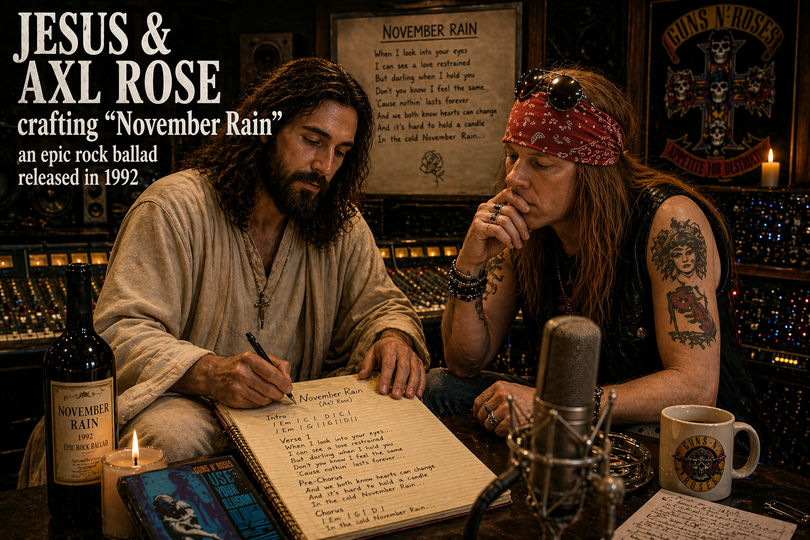
Jesus and Pauline said,
“...and then what happened, Greg?”
...and then, 30 years later
(so that I would learn to love Jesus MORE than before)…
well, a piece of Zion came forth!
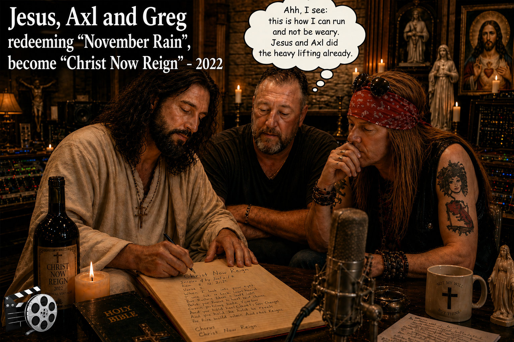
ON JESUS TV – I look, I see God’s Choir: learning to harmonize
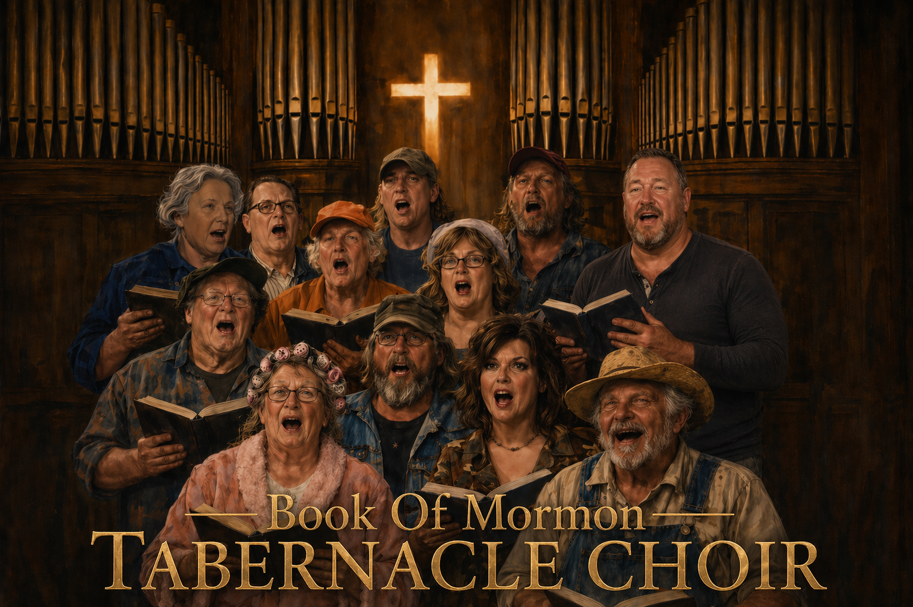
LOOOOK: JESUS GIVES ME CHOIR GLASSES
When he puts Jesus-Axl mud on my eyes, I can see the brighter day…
When you become a member of Zion Coalition you automatically become a member of the Book of Mormon Tabernacle Choir, like Axl Rose did in 2025. Plus, other member benefits: including access to redeemed classic rock songs, membership in Babylon Anonymous (BA), free entry to Jesusdance events, discounts in Jesus Marketplace, free meals at Jesus Restaurant, (and a story about what Jesus had Greg seeking in Maine)… and much much MORE.
Axl Rose: inductee
“And the light shineth in darkness[mud]; and the darkness[mud] comprehended it not.” (John 1:5)
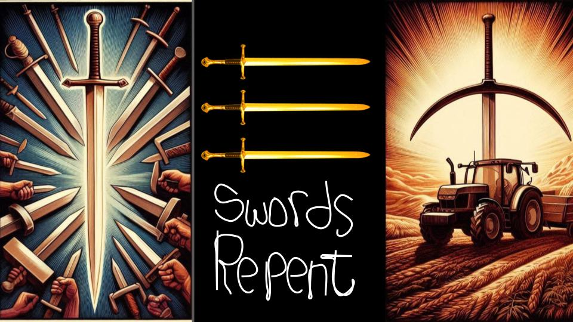
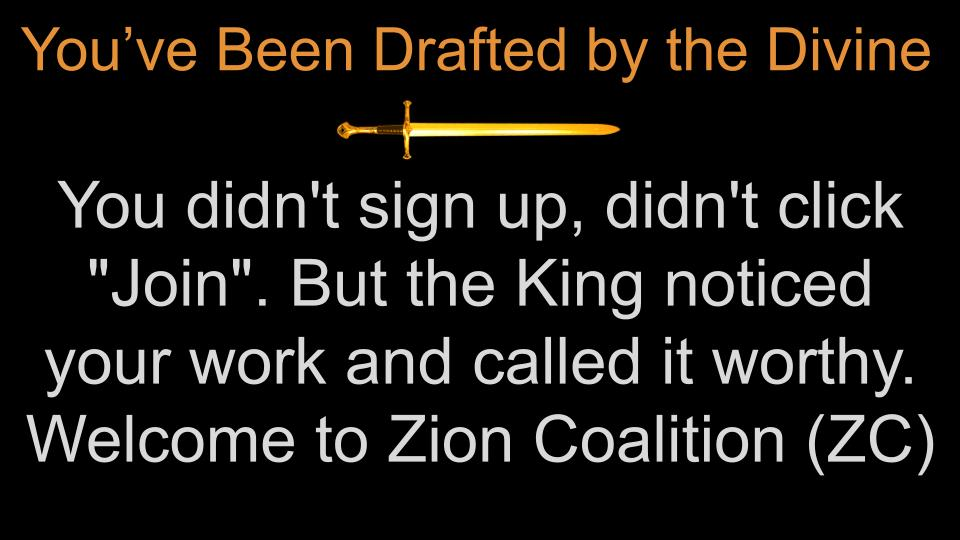
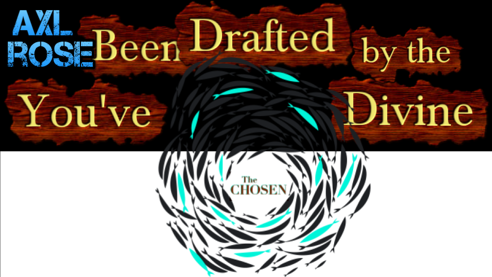
conversion
Welcome Ye
(Muddy) Swords
Enter The Machine, The Practice
- Swords → Ye tools once meant to defend or attack
- Jesus-less memories → Ye recollections awaiting His presence
- Secular songs → Ye melodies reclaimed as vessels of praise
- Weaknesses → Ye places where grace can enter
- Failed dreams → Ye compost for wiser hopes
- Molehills → Ye least of things, come become mountains
- Mundane habits → Ye ordinary repetitions made holy
- Wounds → Ye wells of compassion
- Lovely/Good/Praiseworthy Things → Ye things meant to become MORE lovely, MORE good, MORE praiseworthy
- Shame → Ye humility that keeps us human
- Fear → Ye attentiveness and reverence
- Anger → Ye energy redirected toward justice
- Pride → Ye confidence refined by truth
- Losses → Ye deeper capacity to love
- Mistakes → Ye hard-earned teachers
- Mortals → Ye regulars hiding the Christ incognito (per Mt. 25:40)
- Doubts → Ye doorways to honest faith
- Secular Institutions → Ye structures now called to service
- Regrets → Ye signposts pointing forward
- Broken plans → Ye openness to better ones
- Suffering → Ye fellowship with others in pain
- Limitations → Ye boundaries that shape beauty
- Disappointments → Ye recalibration of desire
- Old identities → Ye soil for truer selves
- Conflicts → Ye invitations to peacemaking
- Exile / loneliness → Ye listening spaces for God
- Death-like endings → Ye seeds of resurrection
- Wasted time → Ye hidden preparation, waiting that ripens purpose
- White-washed sepulchers → Ye exposed facades becoming honest, living temples
unwitting participant
Axl, you didn’t sign up. Didn’t click “Join”.
(Neither did Russel M. Nelson)
But Axl, the King noticed your work. Called it worthy.
Welcome to Zion Coalition, brother Rose.
Surprise!
Dear brother Rose, Jesus is using you to build Zion
— aka the Kingdom of God on Earth.
For those who have eyes to see (Jesus TV), much of Zion has been, is now being, and will yet be built by people who are — mostly unwittingly — guided (S-h-e-p-h-e-r-d-e-d) by the careful, mysterious, often unseen orchestrations of Jesus (The Good Shepherd) just as with the Fall, the Atonement, and every other heaven-orchestrated event on earth.
Unwitting Zion-Building Pattern
 Revealed
Revealed
Also see the movie
Mud
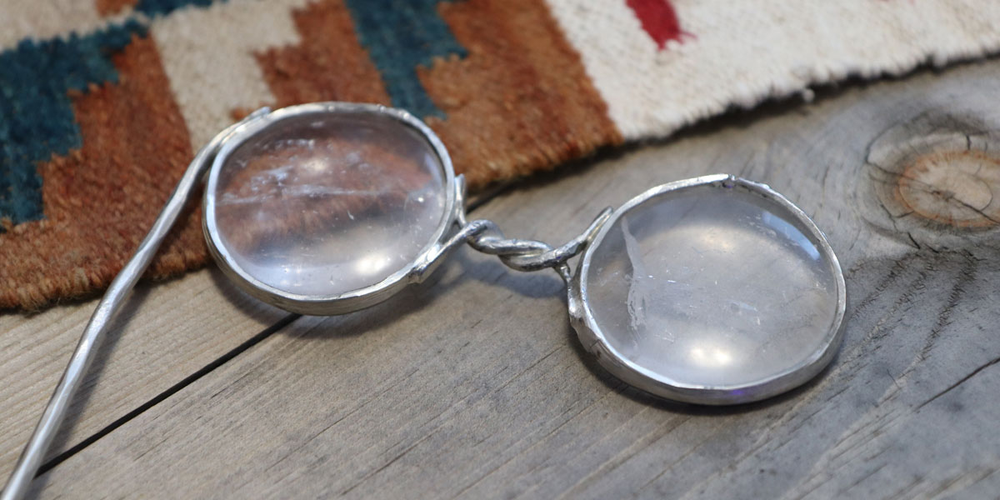
♬ You Can’t Hide ♬
Cuz we see you! (On Jesus TV)
Jesus’ coming for you, all you lost sheep
You can’t hide from Jesus, there is no retreat
Try to run fool, away from Him
Jesus took the punishment for all ‘o your sins
Jesus:
Relentless Pursuer
Possessed
How did we I-spy you?
Well. Besides loving classic rock songs that Jesus has ‘born again,’ we at Zion Coalition (ZC) are people Jesus has taken full hold of—‘Jesus People.’” We are literally possessed by the Spirit of Jesus Christ (per Alma 34:34). He is in us. We sing this song and take it literally: ♬ “I have a little light inside, I’m going to let it shine” ♬
We #HearHim. He directs this work. If we were a car, He has the wheel. Oh my.
We got possessed and we stay possessed by Jesus’ Spirit by watching TV…
Jesus TV - Possession TV
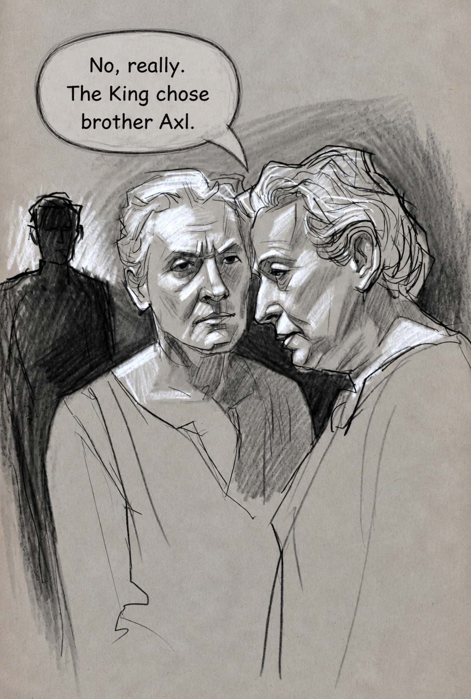
Unbidden Chosen
WHO TOLD ON ME?
In short, you were identified (drafted) by one of our “Seers” (mortal or immortal members) who serve within Zion Coalition. They saw you on Jesus TV. And then they reported you.
You are being watched by…
Seers Of The Seed
what the ?!#*
(un)Sensible
This Doesn’t Make (Normal) Sense.
Yep. So, if you are trying to make “normal” sense of what we are doing here at Zion Coalition… good luck. God’s ways are not man’s ways. Zion will be 180 degrees different than Babylon. Get used to different. Jesus is having us build a different world, a different way . It is time.
Can You Be More Clear?
Nope. Much of this is esoteric — because Jesus wants it to be. Consider it a sign or token of its authenticity, its otherworldly origin.
Jesus often presents His best works in an esoteric way,
as revealed here.
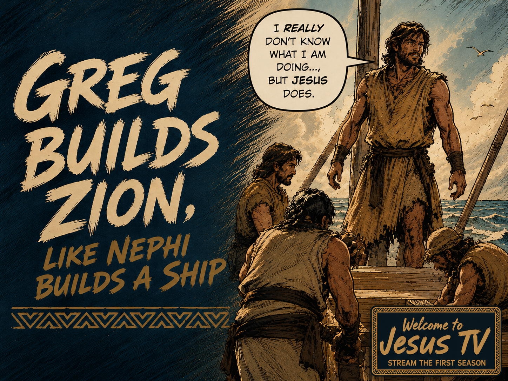
“Now I, Nephi, did not work the timbers after the manner which was learned by men, neither did I build the ship after the manner of men; but I did build it after the manner which the Lord had shown unto me; wherefore, it was not after the manner of men.”
—1 Nephi 18:2
To see what Jesus is doing here, you may need a seer stone
Heaven knows I do – I need a “crutch”
Zion Coalition is a
Seer Stone Approximation
fold in (His Fold)
Jesus loves you. He won’t leave you out of the greatest work upon the earth.
— He Didn’t Leave Out Guns N’ Roses
Axl – Inaugural Member
“When He puts mud on my eyes, I can see the brighter day…”
When Axl Rose wrote “November Rain” (with Jesus and angels), he was almost certainly unaware that he was laying down a musical track destined to become part of Zion. He didn’t know that the same song would one day be redeemed—that it would repent— receive MORE Jesus than it ever carried before (and it would get a new name, “Jesus Christ Now Reign”—and that Jesus would use it as the Zion Coalition theme song. His bandmates, likewise, were unwitting Zion builders. Had you pressed them, they might have admitted that God had given them musical gifts—Gifts of God. And they certainly might have sensed something special, even Heavenly, about “November Rain.” But they would have been stunned to learn from Jesus that their song would one day be born again in Christ and become an example of what Jesus is doing with the entire world (and everything in it, and upon it): Redeeming it (help it repent). Turning swords into ploughshares. Taking what is good and making it better, and then best. Mashing it up. Blending it. Filling it with Christ so thoroughly that what was once lovely, of good report, and praiseworthy (“November Rain”) becomes even more lovely, more good report, more praiseworthy—because it becomes more Jesus-centric, more worshipful, more holy. And in that process, Axl Rose and all his bandmates find themselves mysteriously, beautifully, drafted into the Zion Coalition—a far greater honor than being inducted into the Rock & Roll Hall of Fame, and one they now carry unwittingly, yet no less truly.
by their fruits
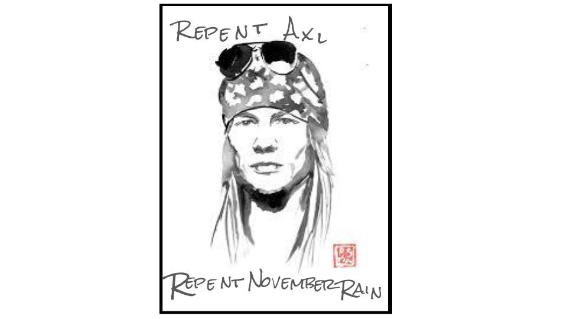
ZC Theme Song (#1)
Jesus Christ Now Reign
A brand new song from King Jesus that reminds us that Jesus is not waiting for some distant day. but now. now. now….’REPENT ALL YE ENDS OF THE EARTH’….repent all ye classic rock songs….be born again
“When he had thus spoken, he spat on the ground, and made clay of the spittle, and he anointed the eyes of the blind man with the clay,” John 9:6
When he puts mud on my eyes
I can see the brighter day
Since Jesus came and saved me
I’ve never been the same
Redemption lasts forever
And we both know hearts can change
Come let us bow before him
Let Jesus Christ now reign
We’ve been through this such a long long time
Just tryin’ to kill the pain, ooh yeah
His love is finally coming
His love is finally showing
The one who really will come save the day
He’s walking this way
Now let us take the time
To lay it on the line
We can rest our head
Just knowin’ that Jesus wins
All the time (all the time)
So if you want to be free
Heart of mine don’t refrain
Or I’ll just end up walkin’
In the cold November rain
Now you need some time t’worship God
Let my people go t’worship God
Everybody needs some time t’worship God
Don’t you know you need some time t’worship God
I know it’s hard to keep an open heart
When even friends seem out to harm you
But if Jesus heals your wounded heart
Wouldn’t time be out to charm you
(Bridge 1)
Now I need some time t’worship God
Let my people go t’worship God
Everybody needs some time t’worship God
Don’t you know you need some time t’worship God
(Bridge 2)
And when my fears subside
But shadows still remain, oh yeah
I know that Jesus loves me
On the cross he took my shame
So never mind the darkness
We still can find the way
‘Cause redemption lasts forever
So let Jesus Christ now reign
Don’t ya think that you need somebody
Don’t ya think that you need someone
Everybody needs somebody
Jesus Christ is the one
He is the only one
Don’t ya think that you need somebody
Don’t ya think that you need someone
Everybody needs somebody
Jesus Christ is the one
He is the only one
Don’t ya think that you need somebody
Don’t ya think that you need someone
Everybody needs somebody
Jesus Christ is the one
He is the only one
Don’t ya think that you need somebody
Don’t ya think that you need someone
Everybody needs somebody
Jesus Christ is the one
He is the only one
Don’t ya think that you need somebody
Don’t ya think that you need someone
Everybody needs somebody…..
Don’t ya think that you need somebody
Don’t ya think that you need someone
Everybody needs somebody
Jesus Christ is the one
He is the only one
Don’t ya think that you need somebody
Don’t ya think that you need someone
Everybody needs somebody
Jesus Christ is the one
He is the only one
Don’t ya think that you need somebody
Don’t ya think that you need someone
Everybody needs somebody
Jesus Christ is the one
He is the only one
Don’t ya think that you need somebody
Don’t ya think that you need someone
Everybody needs somebody
Jesus Christ is the one
He is the only one
Don’t ya think that you need somebody
Don’t ya think that you need someone
Everybody needs somebody…..
https://youtu.be/StDODd-HdjM
you know how
How Can I Know If This Is True or Not?
Most people who come to Zion Coalition deep down believe that God (indeed) really does answer prayers. Click here to remind yourself that you can pray to know if Jesus really did found Zion Coalition and redeem Guns-n-Roses songs and so much more.
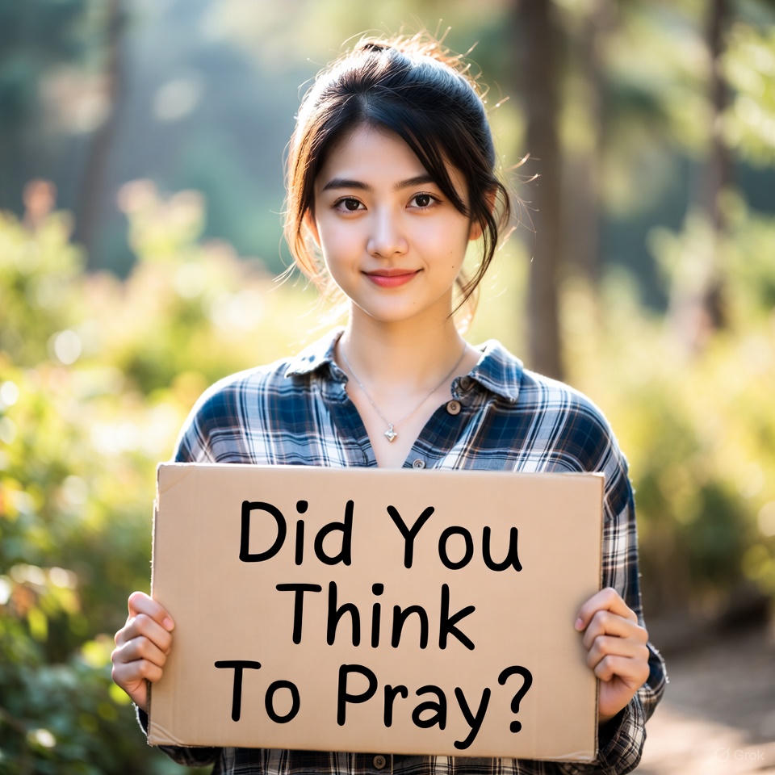
treasure hunt
We Seek These Things
Jesus is using you in a treasure hunt that He is conducting with us….If there is anything virtuous, lovely, or of good report or praiseworthy— (we) think on these things… for they have the power to possess us with the most wonderful feeling.
— Jesus the very thought of thee
— It’s a MORE-Jesus feeling
it’s a game. a holy. one. a r~e~v~o~l~u~t~i~o~n~a~r~y one. we’re playing it. daily. all day long. with Jesus. seriously. (Philippians 4:8ish)
(Find Waldo? Nope. Find Jesus!)
“Oh look!, there He is (in 1991) with the band Guns-n-Roses, writing a song for me and Jesus, and the Zion Coalition.”
We Reveal Hidden Treasure
“Jesus is using you to build Zion… whether you know it or not, whether you acknowledge it or not”
Count your many blessings, name them one by one. Or don’t.
Jesus counts things that are often not counted in Babylon.
2,000 possession points
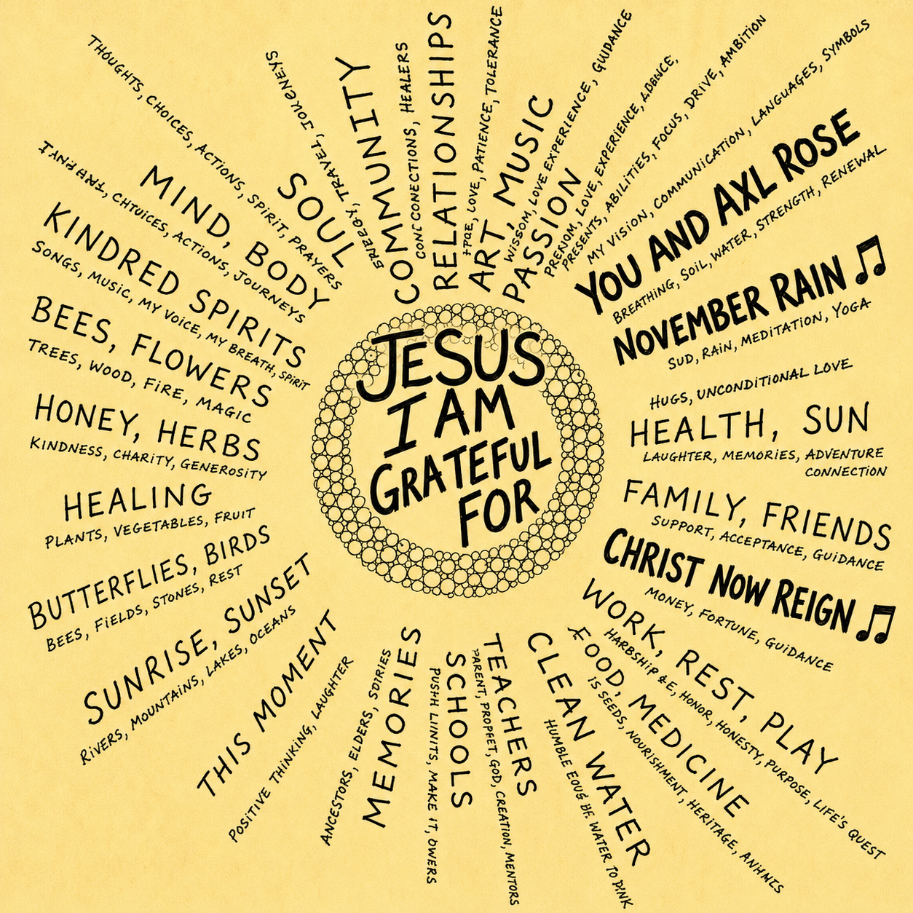
Building a new world
a WORLD OF GRATITUDE “Jesus, thank you Lord, for…
2,000 Gratitude Statements (RE-reinforced)
As we hunt— as we go on these Zion Coalition sponsored “Jesus Treasure Hunts” —- we are specifically looking for people and things (actual pieces of Zion) that authentically, sustainably and repeatedly evoke inside of us feelings of deep gratitude to Jesus. We intend to reconfigure our lives (structure our Jesus world) so that we repeatedly, explicitly express gratitude (in word, in deed and in song) directly to Jesus, Himself.
ZC Gratitude
Altar Generator
song #2 repents
 Redeeming.
Redeeming.
 Turning.
Turning.
Converting.
 Colonizing.
Colonizing.
 Zionizing.
Zionizing.
ZC Theme Song (#2)
♫ Our (2nd) Theme Song (An Example Of Redeeming)
While Jesus could certainly use actual swords to teach us how to redeem things (into ploughshares), Jesus has instead chosen, of all things, classic rock songs, to demonstrate how Zion is to be redeemed (built). The upcoming Zion Coalition theme song (#2) was once a secular (sword) classic rock song. Then, Jesus redeemed it (ploughshare) — (RE)purposed it for Zion Coalition.
This song (like the other 2,000 redeemed classic rock songs) is a reminder of how the rest of Zion will be built. Spoiler: we don’t build it—Jesus does. We just help. For example, Jesus is the one who chooses what songs (swords) to redeem and when; He chooses what the new (better, more Jesusy) redeeming lyrics will be; He also chooses which humans He will reveal the new songs to, and what their labours shall be (and what gifts they will use to download said songs).
Jesus does the heavy (est) lifting in the building of His Kingdom. We’re learning (and being continually reminded by Jesus) that His “yoke is easy”, and His “burden is light”. This theme song is a perfect example: it came to us effortlessly.
Or, to put it another way—we used “The Force.” (Translation for the religious crowd: Jesus gave it to us through revelation.) It felt more like a download from heaven than a composition session.
Yep, Jesus Himself handed us a redeemed, colonized, born-again classic rock song to serve as the anthem of the Zion Coalition. Meaning: the heavy lifting was already done by others. All we had to do was receive it, reword it, rename it and repurpose it. Days, not weeks, months or years, of work. Fast.
Easy. Light. Fun.
One
♫ ♪ ONE IS THE LONLIEST NUMBER THAT YOU’LL EVER DO ♫ ♪
And—because Jesus is Jesus—He didn’t stop at one. Zion always comes with a witness. If November Rain is the thunder rolling in from the distance, then this next song is the sunrise breaking open the sky. A second anthem. A second redeemed classic. Another ploughshare hammered out of a sword. Together they form a pair— a two-fold testimony of how Jesus builds the Zion Coalition: He redeems what already exists… and He hands us the pieces of Zion already in motion.
The result is a new prayer-song (hymn) that mirrors both our mission and our method. Originally born in 1972 under the name “Pieces of April,” written by Jesus (with some help from Three Dog Night), it’s now been Christened “Pieces of Zion.”
Behold
The following lyrics remind us: every person, place, thing, group, or organization is just one piece of the million-piece puzzle called Zion. And now, Jesus—the Puzzle Master—is putting it all together.
So come on. Let’s sing along with the angels:
Jesus give us springtime
And the promise of new flowers
And the feeling of revival
And the love that we call ours
God take away our sadness
Open roads we each must cross
We’re now livin’ a time meant for us
To build Zion in the open at any cost
I build pieces of Zion
I keep them in a memory bouquet
I build pieces of Zion
God is starting to reign
We stand on the crest of history
Called by Jesus, The King of kings
Feeling dawn of a revival
Not really knowin’ what it means
But it must be then that
God stands beside me now
To make me feel this way
Like I’m building Zion
And God is starting to reign
Bridge
I build pieces of Zion
I keep them in a memory bouquet
I build pieces of Zion
God is starting to reign
I build pieces of Zion
I keep them in a memory bouquet
I build pieces of Zion
God is starting to reign
God is starting
God is starting to reign
God is starting
God is starting
God is starting to reign
Now, God is starting
starting to reign
starting to reign
the call
“We are called by Jesus to build Zion in the open, like Noah built the ARK in the open (not in the closet). We build Zion now—through joyful creation, and sacred collaboration.”
“If there is anything virtuous, lovely, or of good report or praiseworthy, we seek after these things”…
…and when we find them, we make them members of the Zion Coalition…
with or without their permission.”
use the force (Luke)
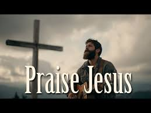
Zion is built by the act of praising Jesus.
And Jesus is found in anything virtuous, lovely, or of good report or praiseworthy.
Seek after these things… for they are Zion.
— Something that Jesus said to me, and I believe.”
“To a great extent our job is quite easy: look and see it (Zion!), claim and own it (Zion!), praise Jesus for it (Zion!). Jesus does the rest… using other people who have been, wittingly or unwittingly, bearing our burdens; those who have been intentionally or inadvertently building pieces of our beloved Zion. Sword by sword. Or ploughshare by ploughshare. Our job is to inherit it. When we are Christ’s, our lives intertwine. Our stories braid together into one heart and one mind. Zion is not a solo masterpiece but a collective inheritance. ‘When one does it, it’s like we are all doing it.’ Jesus lets us stand on ground someone else prayed over. He lets others rest in shade grown by our obedience. In His Kingdom, no act of faith is wasted, no sacrifice stored in a private vault. Every ploughshare swung in secret becomes soil we all inherit. Every sword laid down becomes peace we all enjoy. In Christ, we inherit each other’s efforts (thanks Jesus and Axl Rose)—and others quietly inherit ours (thanks Jesus and Greg Muller). This is the miracle of Zion: shared burden, shared blessing, shared becoming.”
vicarious
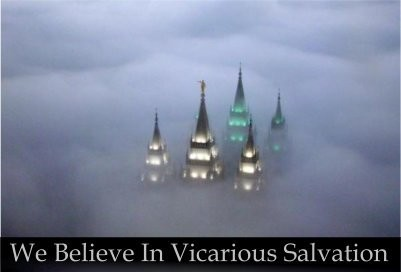
THE PRECEDENT: Vicarious Work for the Dead (and the living!!!)
Jesus Has Us Bear One Another’s Burdens
“Again: in Christ, we inherit each other’s efforts — because He first let us inherit His own. This is the pattern He established: the righteous laboring vicariously for those who cannot lift themselves. Jesus worked for the spiritually dead — for us — so we could rise into life we did not build, peace we did not forge, and a Kingdom we did not construct. His grace is the ultimate ‘shared burden, shared blessing.’ Zion simply continues that pattern. We step into ground others prayed over. Others step into blessings shaped by our obedience. None of us stands alone, because Christ stood alone once — for all.
Inheriting each other’s efforts isn’t a side-feature of Zion. It is the very nature of Christ’s work, extended through His people.”
Inherit This!!
Vicarious Work Principle
inheritance
The Doctrine of Inheritance
working the system…. by working for Jesus
“Come, everyone who thirsts,
come to the waters;
and he who has no money,
come, buy and eat!
Come, buy wine and milk
without money and without price.”
(Isaiah 55:1, ESV)
1. Natural / Worldly Inheritance: Definition: Passing down wealth, property, status, or rights from one generation to another. Principle: You don’t earn it; you’re born into it or adopted into it. Application: Many who inherit wealth didn’t work for it, yet walk in the benefits of what someone else built.
2. Spiritual Inheritance (Kingdom of God): Biblical concept: We are ‘heirs of God and co-heirs with Christ’ (Romans 8:17). Through Jesus: We inherit eternal life, peace, power, and relationship — not because we earned it, but because of our relationship with Him. Zion framing: Being part of Zion is not about achievement. It’s about willingness to inherit — it’s gifted through covenant and belonging.
3. The Doctrine in Action: In Zion: Those who belong inherit the blessings — not because they built Zion, but because they recognized and aligned with what God is doing. ‘Not much’ required: Inheritance is not effort-based — it’s about identity, lineage, trust, and faith.
Jesus will have His people inherit Zion, piece by piece:
Yo, The Yoke Is Easy
‘Blessed are the meek, for they shall inherit the earth.’ — Matthew 5:5.
4. Implications: Inheritance humbles the achiever. Inheritance elevates the unqualified. Inheritance requires trust, not toil. Inheritance shifts the focus from doing to receiving — and from earning to belonging.”
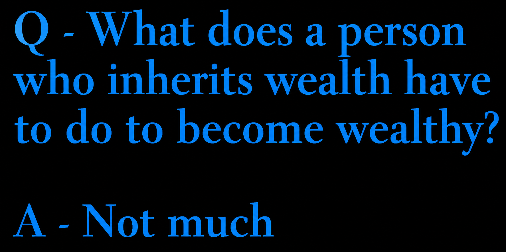
Learn more about ‘The Easiness’
here:  https://zioncoalition.org/01-the-easiness.html”
https://zioncoalition.org/01-the-easiness.html”
Easy like Repentance – https://zioncoalition.org/01-new-repentance.html”
A Jesus-WORLD is built by repentance
ZC Part of a: Hidden World
xx
Developer notes: “ZC Logo — The Jesus Orange (But Sweeter Still) The logo for Zion Coalition is an orange — a seemingly simple fruit, yet rich with meaning. Just as the orange is made up of many juicy segments, the JesusVerse is composed of countless interconnected sections, each contributing to the fullness of the whole. Within even the smallest segment, there are layers, membranes, and textures — reminding us that every part of creation, every act of goodness, carries its own depth and purpose. To me personally, Jesus smells like an orange — fresh, vibrant, and full of life. The fruit evokes a sense of divine craftsmanship, like a ball of curious workmanship, reminiscent of the Liahona, which guided ancient travelers with wisdom and purpose. In this way, the orange symbolizes My Jesus-Greg WORLD: a guiding, radiant sphere of goodness, directing hearts toward truth, love, and joy. And beyond its symbolism, the orange is sweet to taste — a perfect reminder that following Jesus brings delight, nourishment, and satisfaction to the soul. In every sense — its form, its fragrance, its flavor — the orange points us toward the fullness, creativity, and sweetness of Christ.”
“Watching Jesus TV, We Got Possessed… Then This Came — My Working Theory with Jesus — A Manifesto — ‘When He puts mud on my eyes, I can see the brighter day…’ I accept that in this mortal life, I will never hold the full, unfiltered truth. Not scientists, not theologians, not me — no one in flesh gets that prize. All we have are working theories, stories, best guesses — our sacred imaginations. I choose to build mine with Jesus. I honour the wisdom passed down from tradition, but I am not chained to it. I will borrow what fits, discard what doesn’t, and let Jesus and I craft something uniquely ours — wild if need be, but alive and true to our relationship. I refuse the illusion that any single theory captures Him. Instead, I will treat every belief as a map, not the territory — always ready to redraw the lines when He shows me more. I will live in the tension between mystery and clarity, certainty and surprise, tradition and revelation — because that is where Jesus and I meet (until we meet again, in the flesh). And if my Jesus-theory looks strange to others, I will wear that strangeness as a sign that it was not mass-produced, but hand-made with Him. So let it be known — to my family, my church, and to anyone else concerned — that my path is not careless but deliberate. I will test, try, wrestle, and experiment. I will prove all things in the light of Jesus and hold fast to what is truly good. I will not cling to a belief just because it is familiar, nor reject one just because it is unusual. I will believe boldly, even wildly, until the believing shows itself false, hollow, or unfruitful — and then I will lay it down without regret. This is not rebellion; it is devotion to truth, to life, and to the living Jesus who walks with me. — Jesus and Greg, August 14, 2025 (an Article of Faith #11-inspired manifesto and foundational document for Zion Coalition). RE: The document above — among other assignments, Jesus has us (ZC) maintain a special collection of founding documents. These are special documents of a new world Jesus is building, of which Zion Coalition is a part.”
Greg, here’s some additional things Jesus wants you to (look at) feed your head, to memorize and believe: https://zioncoalition.org/01-z-header-stuff.html…………………
and this WITTING WORLD BUILDERS TIPS: https://zioncoalition.org/top-100/……………..
and this: one hundred altars
CORRELATE PROJECT: correlate Zion Coalition and JesusVerse: The Documentary: HERE HERE HERE./….. I sense that maybe (over time) Jesus is going to have me take the underlying principles of one altar and blend them into all the other altars (same principles, different stories). He has me start with this project.
Witting Jesus – WORLD Builders Meeting Sundays at 5:00 p.m. MST (weekly)
Join Zoom Meeting with this link: https://us05web.zoom.us/j/82698119781?pwd=mmA8wpP4ub9ViePkpTbyzQYbzumQ8e.1
Everyone welcome.
eye is symbol for world & symbol for Jesus TV…. eye is glass (made out of mud)…. glass is hook…. that points to glass of my smartphone, where plays Jesus channel 1: Zion Coalition (an altar and a channel)
Greg – – see https://zioncoalition.org/workouts/
Witting Jesus – WORLD Builders Meeting
Sundays at 5:00 p.m. MST (weekly)
Join Zoom Meeting: https://us05web.zoom.us/j/82698119781?pwd=mmA8wpP4ub9ViePkpTbyzQYbzumQ8e.1